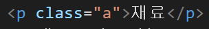
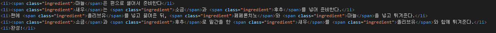

새우감바스 만들기

재료
새우 3컵, 마늘 1/2컵, 소금 톡톡, 올리브유 한컵반, 후추 톡톡, 페페론치노 4~5개
조리과정
- 마늘은 편으로 썰어서 준비한다
- 새우는 소금과 후추를 넣어 준비한다.
- 팬에 올리브유를 넣고 끓여준 뒤, 페페론치노와 마늘을 넣고 튀겨준다.
- 소금과 후추로 밑간을 한 새우를 올리브유와 함께 튀겨준다.
- 완성!
css를 적용하고자 할때, 적용하고자 하는 영역을 지정하는데 사용하는 것을 css선택자라고 합니다.
css선택자에는 태그 영역을 선택하는 태그선택자, 두 군데 이상의 영역을 지정하는 class선택자, 단 하나의 영역을 지정하는 id선택자가 있습니다.
이번 시간에는 "class선택자"에 대해 자세히 알아보고자 합니다.
여기 새우감바스만드는 레시피가 있습니다.
재료
새우 3컵, 마늘 1/2컵, 소금 톡톡, 올리브유 한컵반, 후추 톡톡, 페페론치노 4~5개
조리과정
위의 레시피에는 재료와 조리과정 왼쪽에 붉은색 경계선이 들어가 있습니다.
class 선택자는 두 군데 이상의 여러곳에 동일한 css를 적용하는데 사용됩니다.
조리과정을 살펴보면 재료부분이 분홍색으로 표시되어 있습니다.
위의 사진을 보면, <span>태그 내의 class 속성에 ingredient를 입력하여 여러군데의 영역을 지정합니다.
그리고 class 선택자인 .ingredient를 이용하여 이 영역들을 선택하고, css명령인 color: palevioletred;를 이용하여 글자의 색을 지정합니다.
이처럼 class선택자에서는 클래스명 앞에 "."을 붙여야 합니다.
다음에는 id에 대해 알아보겠습니다.